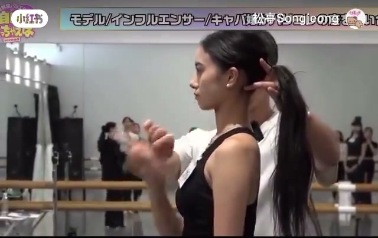
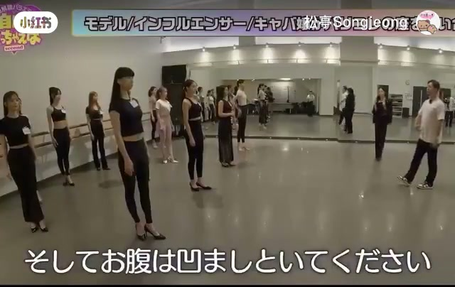
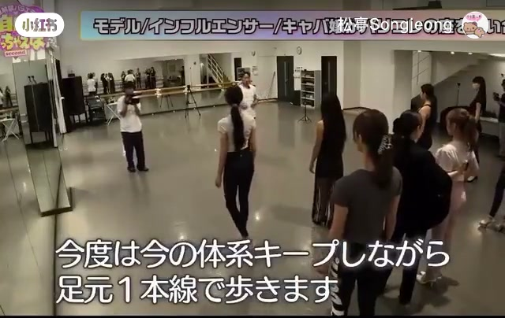
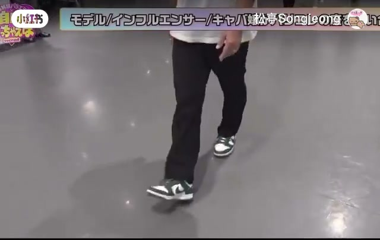
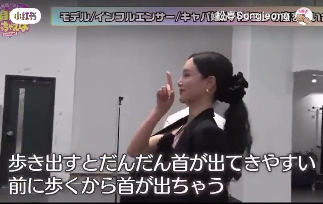

内容要点
「松亭Songjeong」用站姿对比与步行练习讲日本模特步：先把脖子「立起来」拉长，再持续压低/收住腹部力量，最后脚内侧走一条线。口播为繁体中文，部分 ASR 把「收腹」听成「腹部抬低」、把塌腰类问题听成「宁静」，叙述结合画面与字幕重建。
知识结构
同一站姿下对比：颈立起来后脖子更长，更接近模特观感。
步行前就要把腹部压住；这股力量贯穿整段走路。
脚踏一条线；用膝内侧/胯内侧对齐，别低头盯脚。
走起来腹容易垮，要边走边维持站姿里的收腹。
模特步不是「走得好看」，而是立颈+收腹+内侧一条线三件事同时在线。
00:00-01:11立颈拉长与收腹发力
开场让人把脖子在当前位置立起来：对比前后，脖子明显更长，差别「一目了然」，并说这种程度才接近模特。
紧接着强调把腹部压低/收住——画面反复口令「把腹部抬低」（宜理解为收腹下沉）。作者说这股力量对步行很重要，站姿里先练稳，再进走路。


01:11-02:17内侧走一条线并保持收腹
学会站姿后进入步行：脚踏一条线，但不能低头盯脚（会破坏腿部组织）。用膝与膝、或内侧髋/臀作为对齐参照，让腿内侧落在同一条线上。
结尾提醒：一走路腹就容易慢慢垮掉——要在伸直、保持站姿收腹的前提下再迈步，否则线走对了姿态也会散。



完整转录（63段）
以下文本由 Whisper medium 模型自动转录，可能存在少量识别误差，已尽可能修正。
如果你想要在这位置把脖子立起来
脖子比刚才还要长
这样做的话脖子会立起来
可以比较了
这个差别是一目了然
在这程度下脖子会长
脖子会长
脖子会长
在这程度下脖子会接近模特儿
要留意这个
然后把腹部抬低
如果把腹部抬低
就不会变成宁静
因为腹部抬低了
这样做也对
再加上真的把腹部抬低
这个很重要
有这个力量可以把腹部抬低
在步行上是很大的力量
脖骨的力量
把腹部抬低
一二
腹部抬低
在这个时刻保持
把腹部抬低
把腹部抬低
从这里把腹部抬低
一二
学会站姿和姿势
就要学会步行
现在要保持现在的姿势
脚踏著一条线
看著脚踏著走
腿会崩溃
所以不能看著
那要怎么走一条线
要计算一下
膝和膝
或是内臀和内臀
或是臀部和臀部
无论如何
腿的内侧
如果踏著一条线
就差不多能走进腹部
如果没有碰到
如果一条线
就算是在步行
也不会很漂亮
或是腹部会崩溃
所以脚踏著内侧
一条线
开始
一二
对
步行时
腹部会慢慢崩溃
如果步行前
腹部会崩溃
要保持
保持腹部的姿势
伸直后
步行时
腹部会崩溃